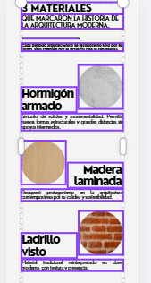

Actividad 1
2 sesiones.
Análisis de muestras reales.
Fichas técnicas: propiedades, usos, ventajas e inconvenientes.
Infografía mediante Canva sobre los tres meteriales elegidos.
3 Materiales
que marcaron la historia de la arquitectura moderna.
Cada período arquitectónico se reconoce no solo por su forma, sino también por el material que lo representó.
Hormigón armado
Símbolo de solidez y monumentalidad. Permitió nuevas formas estructurales y grandes distancias sin apoyos intermedios.
Madera laminada
Recuperó protagonismo en la arquitectura contemporánea por su calidez y sostenibilidad.
Ladrillo visto

Material tradicional reinterpretado en clave moderna, con textura y presencia.
video comparativo de superficies.,con cualquier editor gratuito y en formato MP4 .(1 sesión)
Ejemplo de resumen de análisis del material escogido..
https://www.cosentino.com/es/profesional/documentacion-tecnica/
file:///C:/Users/Israel/Downloads/silestone-ficha-tecnica-es.pdf
Cualidades del Corian (similar al silestone)
- DuPont puede fabricar planchasde Corian® en colores personalizados, diseño y dimensiones, dentro de un límite, y en función de un
pedido mínimo.
-Contactar con especialistas locales, distribuidores, manipuladores o el Centro de Información Corian® para más información.
-Aunque Corian®puede soportar altas temperaturas, debe serprotegido con aislamientos térmicos.
-Las planchas de 4 y 6 mm de grosor, generalmente deben ser utilizadas en aplicaciones verticales y de mobiliario.
-La elección de las de 12 y 19 mm obedecerá a consideracionesestéticas, rendimiento y coste.
-DuPontTM Corian®contiene minerales y, como en todos los materiales naturales, puede haber ligeras diferencias de tonalidad entre dos
planchas. Al carecer de poros, Corian® no absorbe salpicaduras ni manchas sin embargo, algunos productos químicos pueden manchar o dañar su superficie, como por ejemplo el ácido sulfúrico concentrado, cetonas (acetona), disolventes clorados (cloroformo), u otros para decapados de pintura. El grado de deterioro dependerá del tiempo de contacto. Excepto para el tema de los decapados, los cortos períodos de contacto no causarán en general daños a Corian®.
No deben ser utilizados limpiadores ácidos ya que pueden dañar tanto a Corian® como a desagües y tuberías
de plástico. Corian®
4. Propiedades y características
. El comportamiento de las planchas de Corian® puede variar según su grosor (4 mm, 6 mm, 12 mm o 19 mm), estética y acabados.
Desde su introducción en el mercado, en 1967, Corian® ha demostrado duración, versatilidad y adaptación tanto en ambientes comerciales como residenciales.
El color y la estructura del material es homogéneo en todo su espesor y no se deteriora o desprende.
Se puede unir sin juntas visiblespara crear superficiesprácticamente ilimitadas.
Las superficies de Corian® son renovables, es decir que pueden ser perfectamente restauradas con un detergente abrasivo y un estropajo.
De esta forma, por ejemplo, las quemaduras de cigarrillos, son fácilmente eliminadas. Los daños causados por un uso inadecuado,
normalmente se pueden reparar in situ sin tener que reemplazar totalmente el material.
Las superficies Corian® son higiénicas, porque es un material no poroso, y no permite el desarrollo de moho o bacterias en las juntas, ni
bajo su superficie.
DuPontTM Corian® es un material inerte e inocuo. Bajo condiciones normales de temperatura, no hay emisión de gases. Al quemarse, emite principalmente gas Carbónico, y produce un humo de aspecto ligero que no contiene gases tóxicos.
Estas propiedades permiten utilizar Corian® en locales públicos o en delicadas aplicaciones como son los mostradores de embarque de
aeropuertos, las paredes y las encimeras en hospitales, o en cruceros y otro tipo de embarcaciones.
DuPontTM Corian®se puede termoformar en moldes de madera o metal a temperatura controlada, paracrear objetos en dos o tres dimensiones. Los efectos de repujado también pueden ser creados utilizando técnicas de bajo relieve.